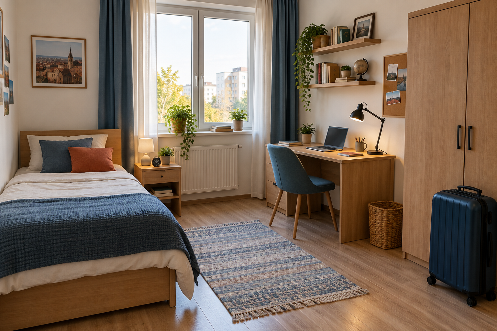

Bine ai venit acasă!
Privește fotografiile și numește obiectele pe care le recunoști.Sieh dir die Fotos an und benenne Gegenstände, die du schon kennst.

Observă · Beobachte
- Câte camere poți identifica? Wie viele Räume erkennst du?
- Unde este fotoliul? Unde este valiza? Wo stehen der Sessel und der Koffer?
- Care cameră îți place mai mult? Welches Zimmer gefällt dir besser?
De la cameră la obiect
Învață pe categorii. Fiecare cuvânt are articol, plural, traducere și exemplu.Lerne in Kategorien. Jedes Wort hat Artikel, Plural, Übersetzung und Beispiel.
A. Tipuri de locuințe · Wohnformen
B. Camere · Zimmer
C. Mobilier și obiecte · Möbel und Gegenstände
D. Descrierea locuinței · Die Wohnung beschreiben
Unde este? Al cui este?
Întâi învățăm poziția, apoi genitivul. Citește exemplele înainte de exerciții.Zuerst lernen wir Ortsangaben, danach den Genitiv. Lies die Beispiele vor den Übungen.
Pasul 1: prepoziții simple · einfache Präpositionen
| Română | Deutsch | Exemplu |
|---|---|---|
| în | in | Cartea este în dulap. |
| pe | auf | Laptopul este pe birou. |
| sub | unter | Covorul este sub masă. |
| lângă | neben | Fotoliul este lângă canapea. |
| între | zwischen | Masa este între scaune. |
Pasul 2: prepoziții complexe · zusammengesetzte Präpositionen
Aceste structuri cer genitivul: în fața, în spatele, în stânga, în dreapta, deasupra, dedesubtul.
| Structură | Deutsch | Exemplu |
|---|---|---|
| în fața + genitiv | vor | Scaunul este în fața biroului. |
| în spatele + genitiv | hinter | Valiza este în spatele ușii. |
| în stânga + genitiv | links von | Patul este în stânga ferestrei. |
| în dreapta + genitiv | rechts von | Dulapul este în dreapta biroului. |
| deasupra + genitiv | über | Raftul este deasupra mesei. |
Pasul 3: genitivul substantivelor · Genitiv der Nomen
| Tip | Forma de bază | Genitiv | Exemplu |
|---|---|---|---|
| masculin/neutru singular | biroul | biroului | sertarul biroului |
| feminin singular | masa | mesei | culoarea mesei |
| feminin singular | camera | camerei | ușa camerei |
| plural | părinții | părinților | casa părinților |
| plural | copiii | copiilor | camera copiilor |
Der Genitiv antwortet auf „wessen?”: ușa camerei = die Tür des Zimmers; casa părinților = das Haus der Eltern.
Pasul 4: posesie cu nume · Besitz mit Namen
Nume feminin
camera Marei
biroul EleneiMaras Zimmer; Elenas Schreibtisch
Nume masculin
camera lui Andrei
fotoliul lui RaduAndrejs Zimmer; Radus Sessel
Exemple complete · vollständige Beispiele
Lampa este pe noptieră, lângă pat. · Die Lampe steht auf dem Nachttisch neben dem Bett.
Valiza este în dreapta dulapului. · Der Koffer steht rechts vom Schrank.
Fotografiile familiei sunt pe peretele livingului. · Die Familienfotos hängen an der Wohnzimmerwand.
Camera lui Andrei este mai mică decât camera Marei. · Andrejs Zimmer ist kleiner als Maras Zimmer.
Camera noului student
Citește descrierea și verifică fotografia.Lies die Beschreibung und überprüfe sie anhand des Fotos.
O cameră luminoasă
Familia Popescu are un apartament cu patru camere. Camera studentului este la capătul holului, lângă camera lui Andrei. Este o cameră mică, dar luminoasă și practică. În stânga ferestrei este patul, iar lângă pat se află noptiera. Pe noptieră sunt o lampă și un ceas.
Biroul este în dreapta ferestrei. Laptopul se află pe birou, între lampă și cărți. Deasupra biroului sunt două rafturi. Dulapul este lângă birou, iar valiza este în dreapta dulapului. Covorul albastru este în mijlocul camerei. Studentului îi place camera pentru că este liniștită și bine organizată.
Die Familie Popescu hat eine Vierzimmerwohnung. Das Studentenzimmer liegt am Ende des Flurs neben Andrejs Zimmer. Es ist klein, aber hell und praktisch. Links vom Fenster steht das Bett, daneben der Nachttisch. Rechts vom Fenster steht der Schreibtisch. Darüber befinden sich zwei Regale. Der Schrank steht neben dem Schreibtisch, der Koffer rechts vom Schrank.Dialog: Turul casei · Wohnungsrundgang
Aplică teoria
Exercițiile urmează aceeași ordine: vocabular, prepoziții, apoi genitiv.Die Übungen folgen derselben Reihenfolge: Wortschatz, Präpositionen, dann Genitiv.
1. Alege opțiunea corectă · Wähle die richtige Antwort
2. Completează prepoziția sau genitivul
Descrie o cameră
Lucrează în perechi și folosește propoziții complete.Arbeite zu zweit und bilde vollständige Sätze.
Găsește obiectul
Descrie poziția unui obiect din fotografie. Colegul ghicește obiectul.
Beschreibe die Position; dein Partner errät den Gegenstand.Camera mea
Spune unde sunt patul, dulapul, masa și fereastra din camera ta.
Alege o locuință
Preferi o casă sau un apartament? Explică în 4 propoziții.
Agent imobiliar
Un student prezintă apartamentul; celălalt pune cinci întrebări.
Locuința mea ideală
Scrie 80–100 de cuvinte.Schreibe 80–100 Wörter über deine ideale Wohnung.
Descrie tipul locuinței, camerele, mobilierul și poziția a minimum cinci obiecte. Folosește trei prepoziții complexe și două forme de genitiv.
Ce pot face acum?
Mini-test cu 5 întrebări.Abschlusstest mit fünf Fragen.
Rezolvă toate întrebările.